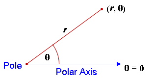
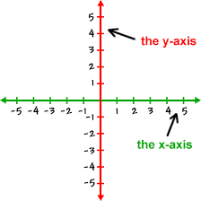
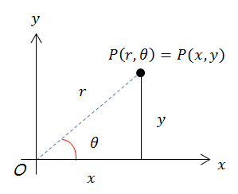

This website will help you better understand everything about the Polar Coordinate System, and what the difference is between the Polar and Rectangular System.



Polar to Rectangular Conversion:
Question: Convert this point into rectangular coordinates: (2, 𝛑)
Solution: First, use the formula x=rcosθ to find the rectangular x coordinate: x = rcosθ = 2cos𝛑 = -2
Now you have the x coordinate. Then, use y = rsinθ as such: y = rsinθ = 2sin𝛑 = 0
That's it! You have converted (2, 𝛑) into the rectangular coordinate (-2,0). But how do you convert from rectangular to polar? Let's find out!
Rectangular to Polar Conversion:
Question: Convert this point into polar coordinates: (-1,1)
Solution: Use tanθ = y/x to solve for θ: tanθ = 1/-1 = -1
Now, use inverse tangent to solve for theta: θ = 3𝛑/4 or 7𝛑/4. Eliminate 7𝛑/4 because we want the angle to be in the second quadrant since that's where our Rectangular
coordinate is. So, θ = 3𝛑/4.
Now, use the equation x^2+ y^2=r^2 and solve for r: r^2=(-1^2)+(1)^2, r=√2
You have converted your coordinate from (-1,1) to (√2,3𝛑/4).
Polar Equations to Rectangular Form:
Question: r = 2
Solution: Using x^2+ y^2=r^2, you can convert r=2 into a rectangular equation as such: r =2 => r^2 = 2^2 = x^2+y^2=2^2
Rectangular to Polar Equations:
Question: y = x^2
Solution: Use the trig relationships already established:
y = x^2 => rsinθ = (rcosθ)^2 => r=secθtanθ
You have converted your equation from y = x^2 to r=secθtanθ.